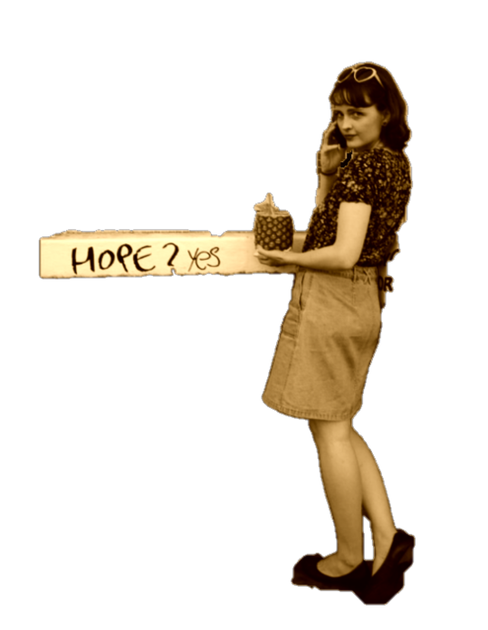
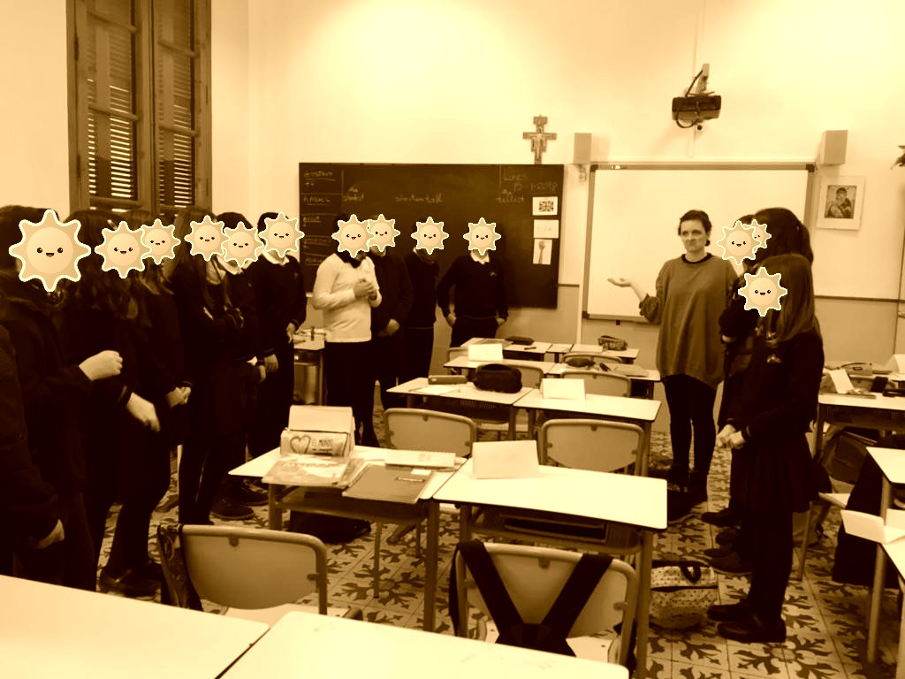
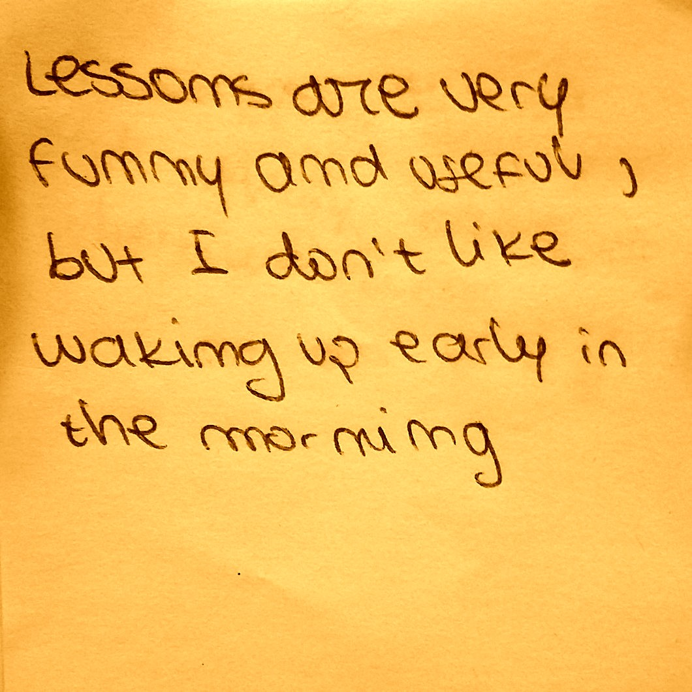
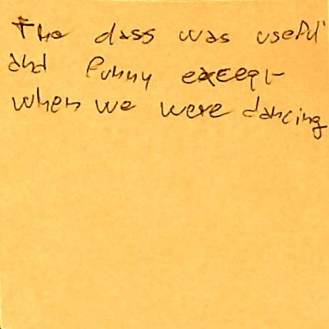

Paint Master, Sad For-Loop Enthusiast, Sad Mother of Infinite Loops
WHO IS SHE?
1: Where is Anna from?
Born and raised in the land of lángos and amazing animation (Hungary!), she then proceeded to move to the Big Smog, where she studied Norwegian language and culture. After her year abroad spent in Paris of the North (Tromsø, Norway), she completed the CELTA course and now can (ironically) teach English as a Foreign Language.
2: What is Anna's biggest fear (other than watching her loved ones die a horrible death)?
Oh, spiders are fine! She has tried herself in the world of catering and retail, both of which have proven to suck out most of her soul particles. What’s the point in selling people overpriced things they don’t really need, when there are people in the world who can’t even buy the things they do need? She soon realised the only way she would not feel like slicing her stomach with a butterknife in any given second at work is if she found something with meaning, something that actually improved general well-being. She is fully aware that this is an awfully complex area, but as her late beloved Cory Monteith, she also believes in the importance of prevention. Reading around at university and while teaching, she gradually realised that it all comes down to education! However manipulative/evil it may sound, young minds are easier to shape, and hey… kids are the future! It is our duty to summarise what we’ve learnt the hard way, and make it natural for them, so that we, as a society can keep moving forward.
3: What is Anna's favourite colour?
Both! Either! All greens! Quality education is crucial, and there are so many causes to care and learn about! Even though she cannot be fully devoted to all existing issues, Anna deeply cares about quite a few: for instance, the environment (fighting global warming and all that jazz, all living things (except maybe pigeons)), physical and mental health (self-love should be reinforced from day 1), and social phenomena (who would have thought there are people in 2018 who have a problem with other people’s gender? race?? sexual orientation??? They clearly didn’t grow up playing The Sims 3…). Though during her three months of teaching, she did try to spread the word (“Love yourself! And be a decent human being!”), she never got further than having sometimes heated discussions about veganism with borderline-carnivorous Italian teenagers. She found the process rather rewarding, but then she wondered, ‘There must be a way of reaching more people than just a couple dozen youngsters at a time!’, and surely enough, there is one fish that seemed to be popping up whenever she thought about it: tech!
4: What is Anna's favourite animal?
Please don’t even mention the p-word to her! On the other hand, the pleasure that sloths bring Anna remind her of the truly joyous moment when her dear Joko told her about this wonderous organisation called Founders and Coders. They share so many of her own cherished values! Having had no idea whatsoever about what coding might entail, she soon realised it’s a whole new world of fresh languages – languages being possibly her favourite bit of life (tying with sloths). Although HTML, CSS and JavaScript are a tad bit more complicated than her usual Indo-European and Finno-Ugric tongues, she has been finding problem-solving and creating beautiful virtual things from scratch (well, checking others’ out) exciting, promising and fulfilling. And quite frankly, it has given her hope. Pretty white boys have been singing about never giving up, and surely enough, Founders and Coders has popped up as a reminder and an opportunity to learn and to improve in order to be able to then help others to do the same.


STUDENT REVIEWS
Not convinced about Anna's skills? See what her students have to say!

"Lessons are very funny and useful, but I don't like waking up early in the morning"

"The class was useful and funny except when we were dancing""Anna you make too much noise, so I prefer Josh. [Feel] good
Michele"